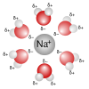

aqueous

Definition: An aqueous solution is a solution in which the solvent is water. It is mostly shown in chemical equations by appending (aq) to the relevant chemical formula. For example, a solution of table salt, or sodium chloride (NaCl), in water would be represented as Na+(aq) + Cl−(aq). The word aqueous (which comes from aqua) means pertaining to, related to, similar to, or dissolved in, water. As water is an excellent solvent and is also naturally abundant, it is a ubiquitous solvent in chemistry. Since water is frequently used as the solvent in experiments, the word solution refers to an aqueous solution, unless the solvent is specified.A non-aqueous solution is a solution in which the solvent is a liquid, but is not water. (See also Solvent and Inorganic nonaqueous solvent.)
Source: Wikipedia
Wikipedia Page (Something wrong with this association? Let us know.)
Wikidata Page (Something wrong with this association? Let us know.)